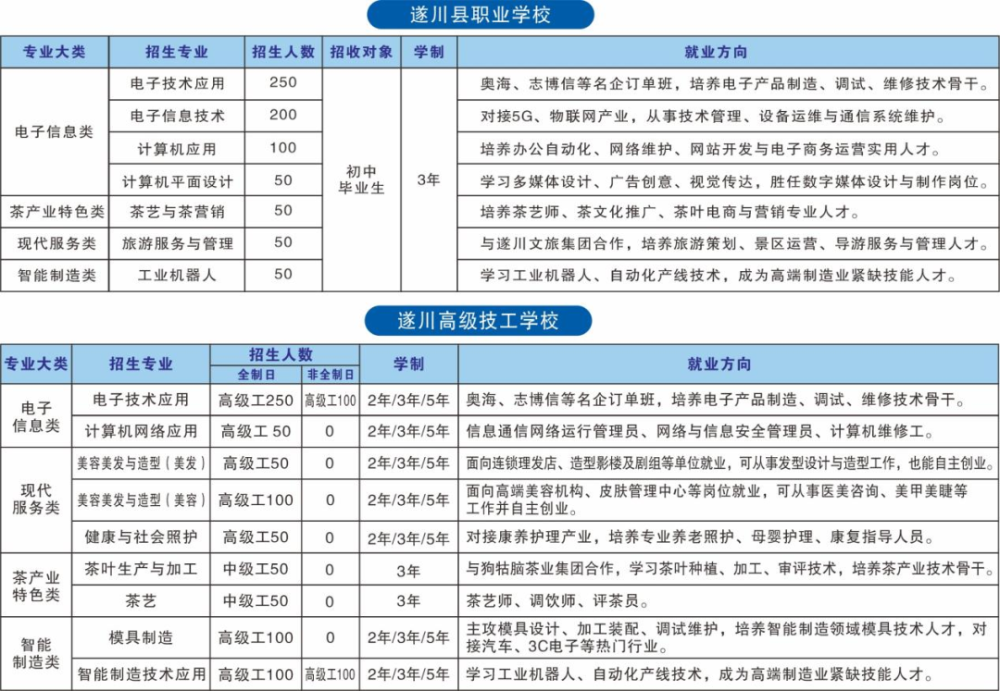

专业跟着产业走 · 人才围着需求育
学校专业设置紧密对接市、县电子信息、智能制造、茶叶、文旅等产业体系，现开设电子技术应用、电子信息技术、计算机应用、计算机平面设计、茶艺与茶营销、旅游服务与管理 6 个专业，2026 年秋季新增工业机器人技术应用专业，形成"职业教育+技工教育"联合办学的专业格局。
各专业依托"校中厂"全真工位开展实训教学，与奥海科技、志博信科技、狗牯脑茶叶集团等企业共建订单班，学生入学即进入企业定向培养通道；茶业特色专业邀请国家级技能大师工作室领办人、中国制茶大师走进课堂，服务县域产业升级对高技能人才的需求。
培养层次与方向以当年官方招生方案为准
◀ 左右滑动查看完整表格 ▶
| 序号 | 专业名称 | 培养层次 | 培养方向与特色 |
|---|---|---|---|
| 01 | 电子技术应用 | 技工教育 | 奥海科技订单班 · SMT 生产线进校园 · 对接县域电子信息产业 |
| 02 | 电子信息技术 | 中职 | 志博信科技订单班 · 电子产品制造与检测方向 |
| 03 | 计算机应用 | 中职 | 办公与数据应用 · 面向信息技术服务岗位群 |
| 04 | 计算机平面设计 | 中职 | 视觉设计与排版 · 面向数字创意服务岗位群 |
| 05 | 茶艺与茶营销 | 特色专业 | 狗牯脑茶叶集团定向培养 · 智能自动化生产线实训 · 技能大师进课堂 |
| 06 | 旅游服务与管理 | 中职 | 对接县域文旅产业体系 · 茶艺与茶营销方向贯通培养 |
| 07 | 工业机器人技术应用 | 2026 年秋新增 | 机器人操作 · 编程 · 维护 · 面向智能制造升级新方向 |

产教一线 · 实训真岗 · 定向就业
对接县域电子信息产业体系，与奥海科技共建订单班，SMT 生产线进校园。学生在全真工位参与企业订单生产，累计产出合格产品 2520 个——学习即实践，作品即产品，毕业即上岗。
依托遂川狗牯脑茶特色产业，与狗牯脑茶叶集团定向培养。共建共享基地配备涵盖杀青、揉捻等关键工序的智能自动化生产线，国家级技能大师工作室领办人、中国制茶大师走进课堂，涵盖茶叶生产与加工、茶艺、茶营销全链条。
与志博信科技共建订单班，聚焦电子产品制造与检测方向，招生即招工，毕业直通企业岗位，实现"留遂就业、薪资优渥"。
面向智能制造产业升级新增专业方向，培养机器人操作、编程与维护高技能人才，依托智能制造实训中心开展教学，入学即抢占产业新赛道。
面向信息技术与数字创意服务岗位群，学习办公与数据应用、视觉设计与排版，培养适应数字化转型的通用型技能人才，升学与就业渠道双畅通。
对接县域文旅产业体系，与茶艺与茶营销方向贯通培养，服务"以茶立县"战略下的文旅融合发展需求。
就业有能力 · 升学有通道
中职—高级技工学校直通车贯通培养，拓宽升学渠道，技能人才同样可以圆大学梦，学历技能双丰收。
与奥海科技、志博信科技、狗牯脑茶叶集团等企业共建订单班，招生即招工、入校即入企，留遂就业率高。
订单班 · 厂中校 · 招生即招工 · 入校即入企
校址：江西省吉安市遂川县高铁新区职校路 6 号（高铁站东侧） · 工作日 8:30-11:30 / 14:30-17:30